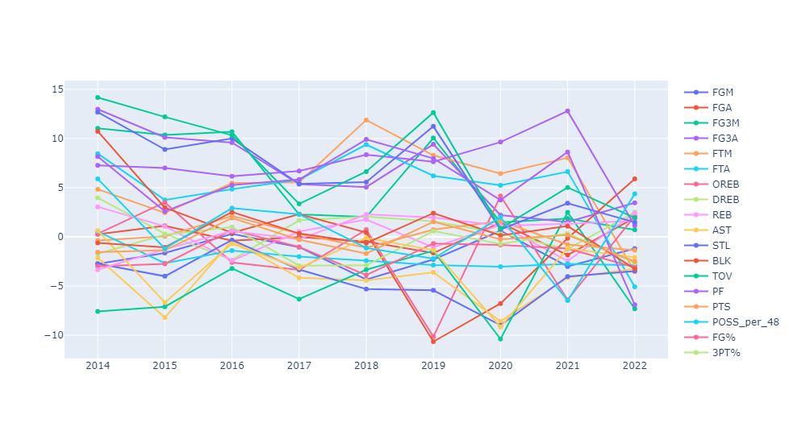
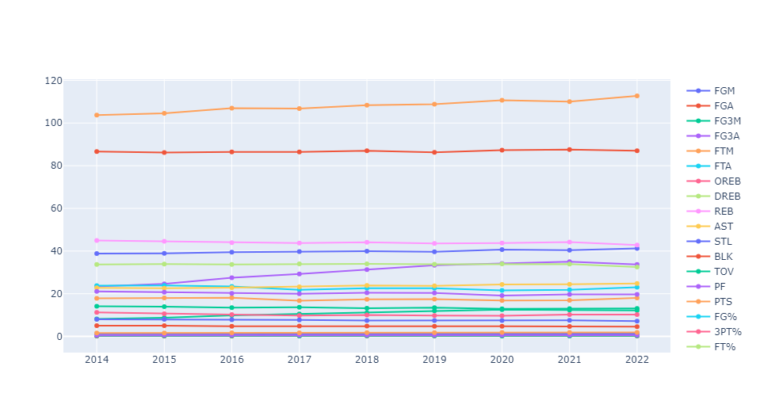
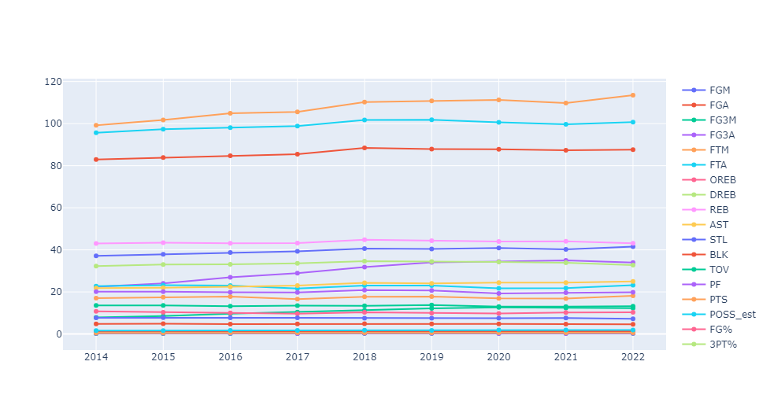

Regular vs Playoffs Difference (Static)
Comparison of statistical differences between the regular season and playoffs over the years.
Regular vs Playoffs Difference (Interactive)
Explore the interactive visualization of Regular vs Playoffs statistics.
Stats Per 100 Possessions
How performance metrics scale per 100 possessions.
Points Per Game (Interactive)
Interactive line plot comparing points per game in regular season vs playoffs.
Stats Per 48 Minutes
Performance metrics normalized to 48-minute gameplay.